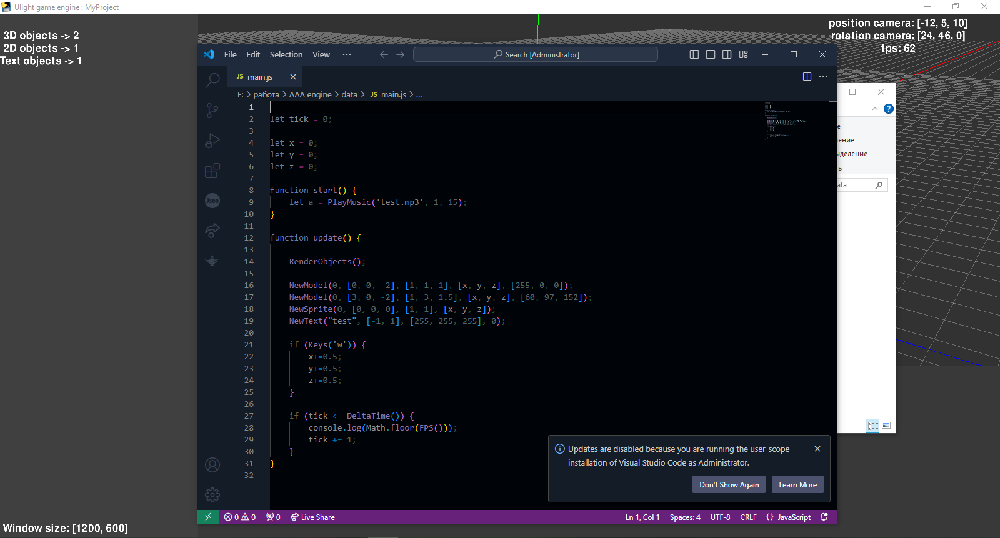
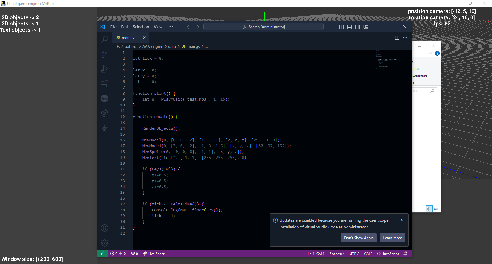
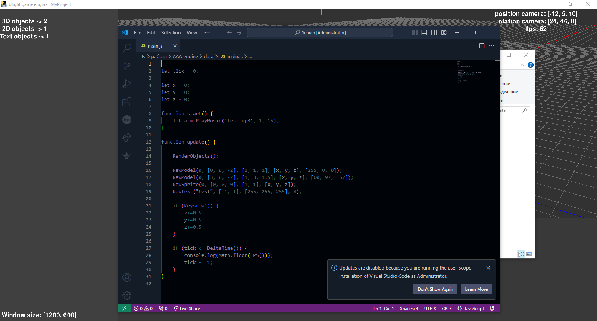
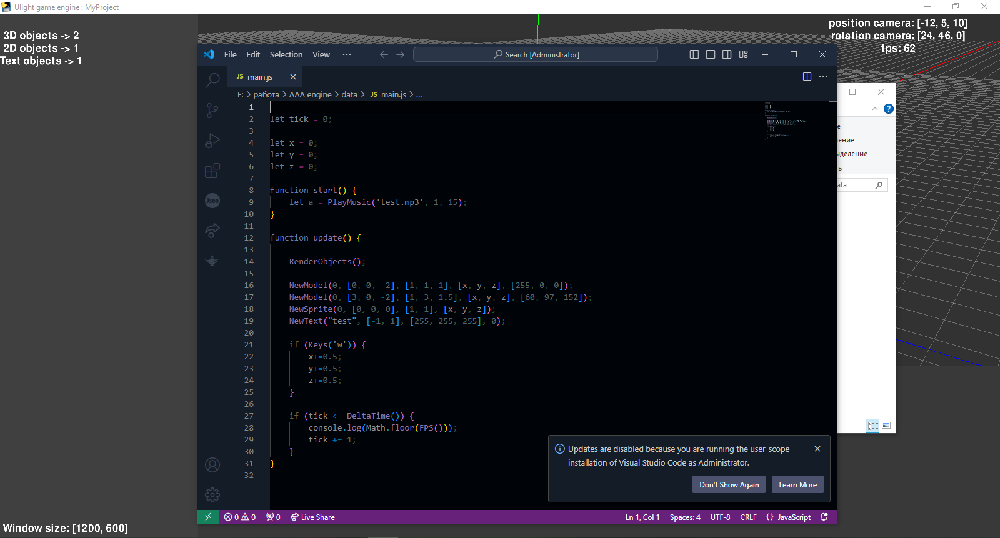
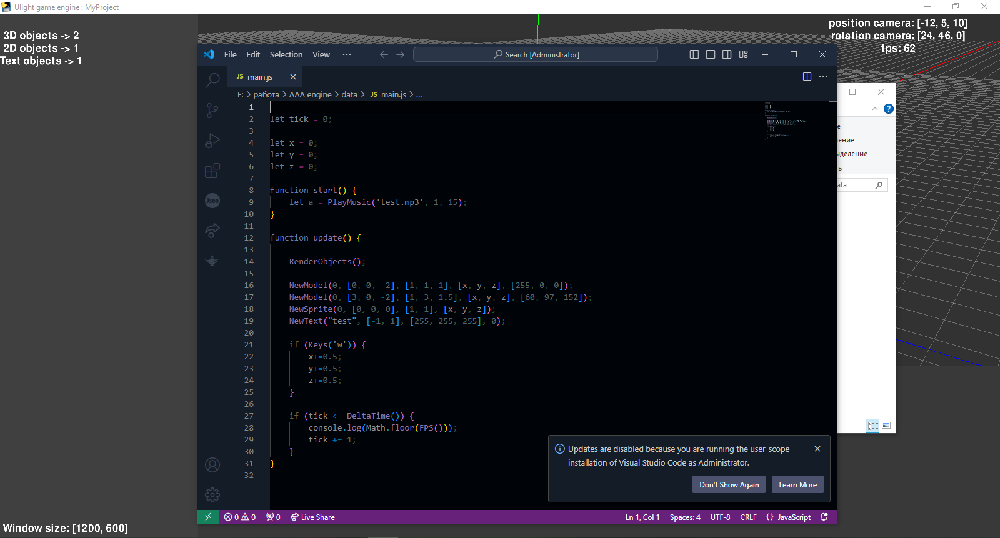

Ulight engine
itch.io
VK
Telegram
Скачать
Русский
English
Скриншоты:

Немного о нас:
Наша команда разработчиков заботится о качестве нашего продукта.
Мы всегда занимаемся улучшением движка.
Для связи с нами сожете использовать
наш чат в тг
.

 


